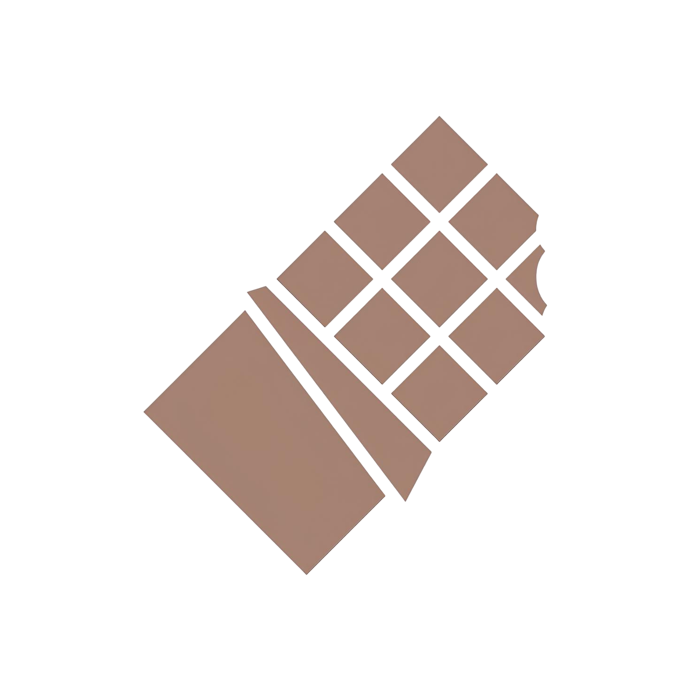
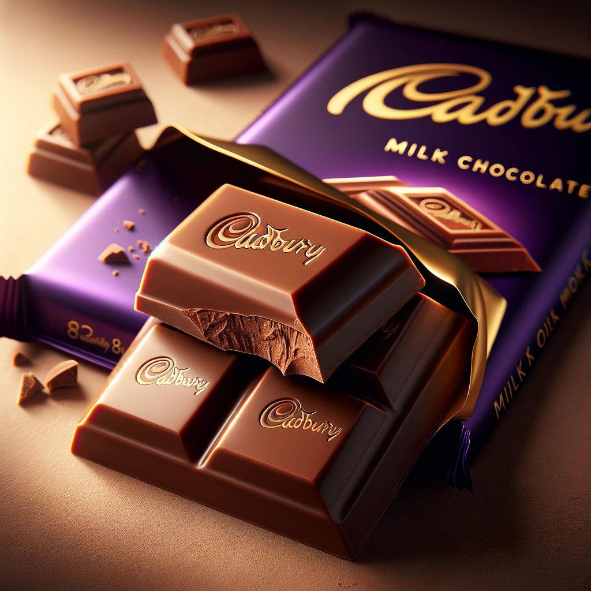
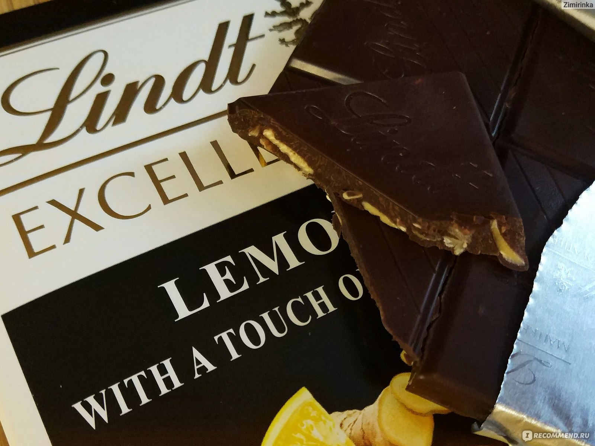
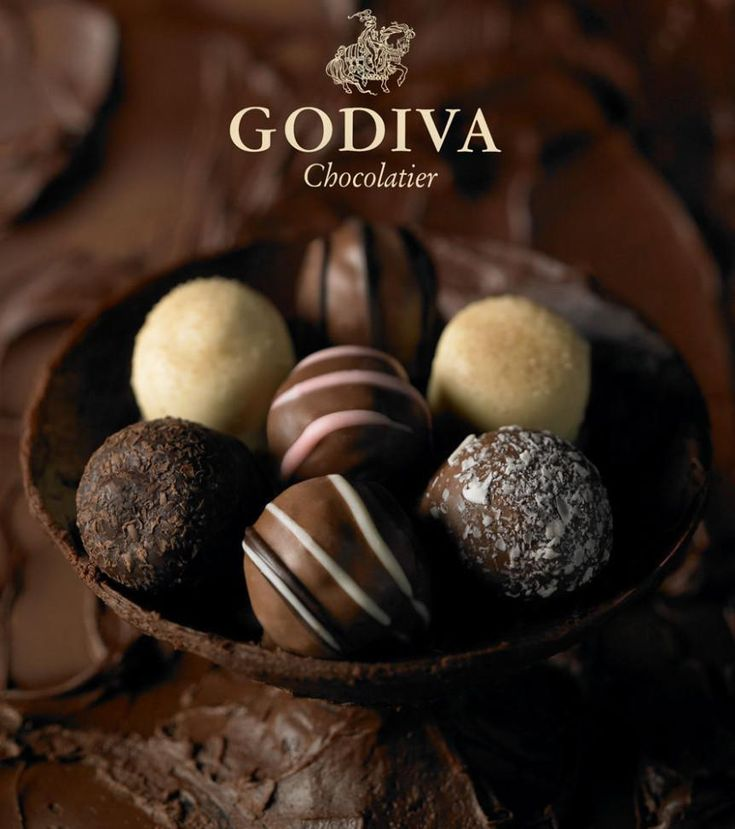

Страны поизводители
Некоторые известные бренды:
Cadbury
Cadbury — один из самых известных и популярных брендов шоколада в мире. Вот информация о его истории, продуктах и значении:
- История
- Основание: Cadbury был основан в 1824 году Джоном Кэдбери, который открыл магазин в Бирмингеме, Великобритания, торгующий шоколадом и чаем. Изначально компания занималась продажей напитков на основе какао, а затем начала производить шоколад.
- Развитие: В 1847 году Cadbury стал одним из первых производителей плиточного шоколада в Великобритании, а в 1866 году начала производство шоколадных конфет.
- Расширение: С течением времени Cadbury расширял свои операции и выходил на международные рынки, приобретая другие компании и заводы.
- Известные продукты
- Dairy Milk: Один из самых популярных продуктов Cadbury, Dairy Milk — это молочный шоколад с гладкой текстурой и насыщенным вкусом. Этот продукт стал символом бренда и пользовался огромной популярностью.
- Cadbury Creme Egg: Эти популярные шоколадные яйца с начинкой из крема выпускаются во время Пасхи и приобрели культовый статус среди любителей сладостей.
- Celebrations: Смешанный ассортимент шоколадных конфет, предлагаемый Cadbury, часто используется для праздников и празднований.
- Социальные и экологические инициативы
- Устойчивое развитие: Cadbury активно работает над улучшением устойчивости своей цепочки поставок, включая программы по улучшению условий жизни фермеров, которые выращивают какао.
- Кодекс этики: Компания придерживается стандартов Fairtrade и других этических подходов, стремясь поддерживать ответственные практики в производстве.
- Привязанность к культуре
- Реклама и маркетинг: Cadbury известен своим креативным и запоминающимся рекламным подходом, часто используя яркие и веселые рекламные кампании.
- Культурное влияние: Бренд стал частью британской культуры, и его продукты часто ассоциируются с праздниками и особыми событиями.
Приобретение
- Мировые операции: В 2010 году Cadbury была приобретена компанией Kraft Foods, что значительно увеличило ее масштаб и ресурсы.
Cadbury продолжает оставаться одним из ведущих брендов в мире шоколада, предлагая широкий ассортимент продукции и поддерживая свои традиции качества и инноваций.

Lindt
Бренд Lindt — это один из самых известных и уважаемых производителей шоколада в мире, известный своими высококачественными продуктами. Вот основные аспекты, связанные с историей, ассортиментом и философией компании:
- История
- Основание: Lindt & Sprüngli была основана в 1845 году россиянами Давидом Линтом и его компаньоном, когда они открыли кондитерскую в Цюрихе, Швейцария. Первоначально компания производила шоколад, но вскоре начала развивать свои рецепты и улучшать качество продукции.
- Инновации: В 1879 году Родольф Линт, сын Давида, изобрел процесс кончирования, который позволил улучшить текстуру и вкус шоколада, придавая ему кремовость и гладкость, ставшую характерной чертой продукции Lindt.
- Известные продукты
- Lindor: Один из самых популярных продуктов компании — шоколадные трюфели Lindor с плавляющейся начинкой, предлагаемые в различных вкусовых вариантах и упаковках.
- Excellence: Линейка премиум-шоколада с высоким содержанием какао и разнообразными вкусами, такими как черный шоколад с морской солью, шоколад с перцем или с добавлением фруктов.
- Шоколадные плитки: Lindt предлагает разнообразные плитки шоколада, включая молочный, темный и белый шоколад, с добавлением орехов, фруктов и других ингредиентов.
- Принципы качества
- Качество ингредиентов: Lindt уделяет особое внимание качеству сырья, используя только отборные какао-бобы и натуральные ингредиенты. Компания придерживается стандартов качества на всех этапах производства.
- Сертификаты устойчивого производства: Lindt активно работает над улучшением устойчивости своих поставок какао, включая участие в программах Fairtrade и других инициативах, направленных на поддержку фермеров и защиту окружающей среды.
- Культурное значение
- Шоколад как искусство: Lindt рассматривает производство шоколада как искусство и создает продукты с акцентом на премиальное качество и уникальные вкусы. Бренд имеет хорошую репутацию в мире гурманов.
- Маркетинг и реклама: Lindt известен своими яркими и креативными рекламными кампаниями, часто подчеркивающими качество и элегантность своего шоколада.
- Глобальное присутствие
- Мировая сеть: Lindt имеет производственные мощности и дистрибьюторские сети по всему миру, включая Северную Америку, Европу и Азию. Шоколад Lindt можно найти в магазинах, супермаркетах и специализированных магазинах.
Бренд Lindt продолжает оставаться символом качества и роскоши в шоколадной индустрии, предлагая широкий ассортимент продукции, который удовлетворяет вкусы шоколадных гурманов по всему миру.

Hershey's
Hershey's — это один из самых известных американских брендов шоколада, обладающий богатой историей и значительным влиянием на шоколадную индустрию. Вот ключевые аспекты, связанные с его историей, продуктами и культурной значимостью:
- История
- Основание: Компания Hershey Chocolate была основана в 1894 году Мильтоном Хершем, который начал производить кондитерские изделия и шоколад в небольшом городке Дансвилле, штат Нью-Йорк. В 1903 году он переместил производство в город Херши, штат Пенсильвания.
- Инновации: Hershey был pionером в массовом производстве молочного шоколада, что сделало его доступным для широкой публики. В 1900 году он выпустил свою первую плитку молочного шоколада. В ходе своей истории компания внедряла новые технологии и рецепты, что способствовало её успеху.
- Известные продукты
- Hershey's Milk Chocolate Bar: Это один из самых известных продуктов бренда, представляющий собой классическую плитку молочного шоколада, которая нравится многим поколениям.
- Hershey's Kisses: Эти небольшие шоколадные "поцелуи" с характерной формой и фольгированным шариком сверху стали популярными с момента их появления в 1907 году и являются символом бренда.
- Reese's Peanut Butter Cups: Конфеты с шоколадной оболочкой и начинкой из арахисового масла были приобретены Hershey в 1963 году и стали одними из самых популярных сладостей в США.
- Социальные и экологические инициативы
- Устойчивое развитие: Hershey активно работает над повышением устойчивости своей цепочки поставок, включая программы по улучшению условий труда для какао-фермеров и снижение воздействия на окружающую среду.
- Поддержка сообществ: Бренд также участвует в социальных инициативах, направленных на поддержку образования и здравоохранения в регионах, где производится какао.
- Культурное значение
- Культовый статус: Hershey's не только является символом американского шоколада, но и имеет большой культовый статус, особенно в таких мероприятиях, как Хэллоуин и другие праздники.
- Маркетинг: Компания известна своими запоминающимися рекламными кампаниями, которые подчеркивают радость и удовольствие от потребления шоколада. Hershey's активно использует социальные медиа и креативные рекламные стратегии для привлечения внимания потребителей.
- Глобальное присутствие
- Мировая сеть: Хотя Hershey's наиболее известен в США, компания также производит и продает продукты в других странах, активно развивает экспорт и выпускает локализованные версии своей продукции.
Бренд Hershey's продолжает оставаться заметным игроком на рынке шоколада, оставляя свой след в истории и культуре сладостей благодаря качеству и доступности своей продукции.
Godiva
Godiva — это известный бельгийский бренд шоколада, который славится своим высококачественным продуктом и элегантным дизайном упаковки. Бренд стал символом роскоши и изысканности в мире шоколада. Вот основные аспекты, связанные с историей, продуктами и философией компании:
- История
- Основание: Godiva была основана в 1926 году в Брюсселе, Бельгия, Жозефом Draps. Название компании символизирует легенду о леди Годиве, что подчеркивает элегантность и изысканность продукции.
- Развитие: С момента своего основания Godiva добилась значительных успехов, расширив свою продукцию и сеть дистрибуции по всему миру. В 1966 году компания начала экспортировать свою продукцию в США и быстро завоевала популярность.
- Известные продукты
- Шоколадные конфеты: Godiva известна своими роскошными шоколадными конфетами и трюфелями, которые предлагаются в различных вкусах и стилях. Они часто используются в качестве подарков на праздники и особые события.
- Подарочные наборы: Бренд предлагает разнообразные подарочные наборы и коробки, которые красиво оформлены и наполнены различными видами шоколадных конфет.
- Особые коллекции: Godiva регулярно выпускает лимитированные серии и специальные коллекции, включая сезонные предложения для праздников, таких как Пасха и Новый год.
- Принципы качества
- Качество ингредиентов: Godiva уделяет внимание использованию только высококачественных ингредиентов, включая отборные какао-бобы, натуральные ароматизаторы и свежие продукты.
- Традиции и мастерство: Бренд сочетает традиционные бельгийские рецепты с инновациями, чтобы создавать уникальные и вкусные шоколадные изделия.
- Культурное значение
- Роскошь и элегантность: Godiva часто ассоциируется с роскошью, и его продукция используется как подарки в особых случаях, таких как свадьбы, юбилеи и другие праздники.
- Маркетинг и реклама: Компания активно использует рекламу, подчеркивающую изысканность и качество своей продукции, обращаясь к потребителям через различные маркетинговые каналы.
- Глобальное присутствие
- Мировая сеть: Godiva имеет магазины и точки продажи по всему миру, включая Северную Америку, Европу, Азию и Ближний Восток. Продукция компании доступна в специализированных магазинах, супермаркетах и онлайн.
Godiva продолжает оставаться символом высококачественного шоколада и изысканных сладостей, предлагая клиентам уникальный опыт наслаждения шоколадом через свои роскошные продукты и внимательное отношение к качеству.

Ferrero Rocher
Ferrero Rocher — это один из самых известных и популярных брендов шоколадных конфет в мире. Бренд принадлежит итальянской компании Ferrero, которая славится своей инновационной продукцией и высокими стандартами качества. Вот основные аспекты, связанные с Ferrero Rocher:
- История
- Основание компании: Ferrero была основана в 1946 году Пьетро Ферреро в Альба, Италия. Первоначально компания занималась производством кондитерских изделий и шоколада.
- Запуск Ferrero Rocher: Конфеты Ferrero Rocher появились на рынке в 1982 году и быстро завоевали популярность благодаря своему уникальному вкусу и привлекательной упаковке.
- Продукт
- Описание: Ferrero Rocher — это шоколадные конфеты, состоящие из целого лесного ореха, окруженного нежной шоколадной масляной начинкой, обернутого в тонкий слой хрустящего вафли и покрытого молочным шоколадом и рублеными орехами. Их уникальная текстура и богатый вкус привлекают потребителей по всему миру.
- Подарочная упаковка: Конфеты часто предлагаются в элегантной упаковке, что делает их популярным подарком на различные праздники и особые случаи.
- Качество и ингредиенты
- Изысканные ингредиенты: Ferrero уделяет особое внимание качеству своих ингредиентов, используя отборные лесные орехи, натуральные наполнители и высококачественный шоколад.
- Производственные стандарты: Компания придерживается строгих стандартов качества и безопасности на всех этапах производства.
- Культурное значение
- Символ роскоши: Ferrero Rocher стал символом роскоши и изысканности. Конфеты часто ассоциируются с праздниками, такими как Рождество и День святого Валентина, и используются как эксклюзивные подарки.
- Маркетинг и реклама: Бренд активно использует рекламные кампании, подчеркивающие уникальные характеристики своих продуктов и стиль жизни, связанный с их потреблением.
- Глобальное присутствие
- Мировая дистрибуция: Ferrero Rocher продается в более чем 100 странах по всему миру и имеет значительное присутствие на международном рынке кондитерских изделий.
- Расширение ассортиментного ряда: С течением времени Ferrero Rocher расширил свой ассортимент, предлагая различные вариации и упаковки, включая подарочные наборы и лимитированные серии.
Ferrero Rocher продолжает оставаться одним из самых любимых брендов шоколадных конфет, благодаря высокому качеству, великолепному вкусу и статусу премиального продукта.